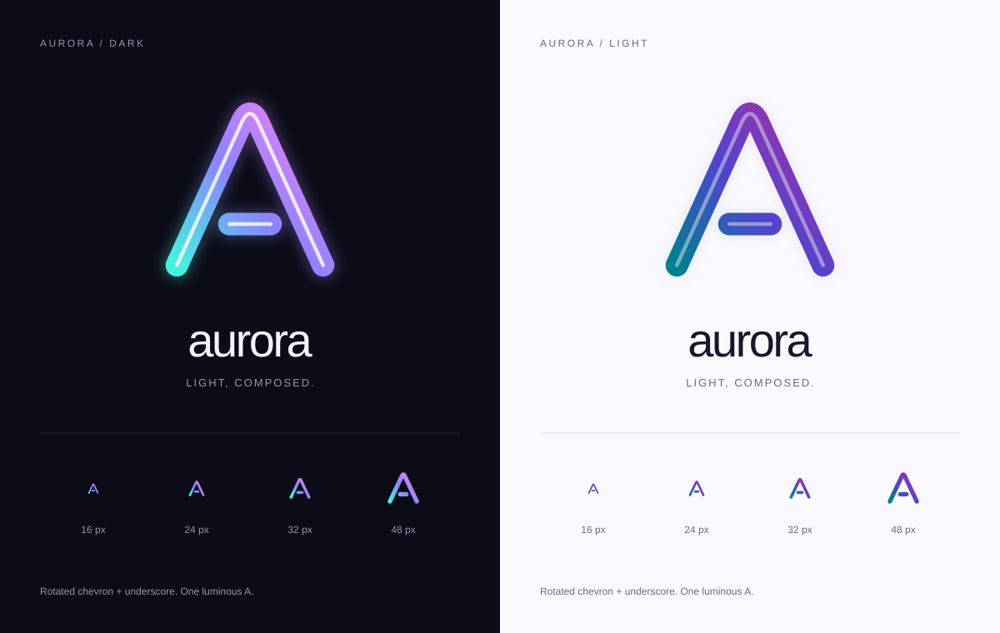

<!doctype html>
<html lang="en"><meta charset="utf-8"><meta name="viewport" content="width=device-width,initial-scale=1"><title>Aurora — logo study</title><link rel="icon" type="image/svg+xml" href="favicon-auto.svg"><style>body{margin:0;background:#151420;font:14px system-ui;color:#f6f3ff}main{max-width:1200px;margin:auto}img{display:block;width:100%}nav{display:flex;flex-wrap:wrap;gap:24px;padding:24px 36px}a{color:inherit;text-underline-offset:5px}.auto{display:flex;align-items:center;gap:18px;padding:24px 36px;background:#faf9fd;color:#19172b;color-scheme:light}.auto img{width:48px;height:48px}.auto.dark{background:#0c0c18;color:#f6f3ff;color-scheme:dark}</style><main><nav><a href="aurora-auto.svg" download>Adaptive SVG</a><a href="aurora-dark.svg" download>Dark SVG</a><a href="aurora-light.svg" download>Light SVG</a><a href="favicon-auto.svg" download>Adaptive favicon</a><a href="aurora-mono.svg" download>Monochrome SVG</a></nav><div class="auto">Automatic SVG · light colour scheme</div><div class="auto dark">Automatic SVG · dark colour scheme</div></main></html>